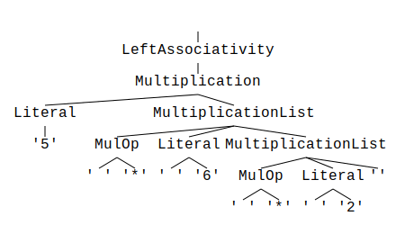

The parol Parser Generator
parol is a parser generator with some unique characteristics.
It is an installable command line tool that can generate complete parsers from a single grammar
description file. parol is also a library that you can use in your own crates.
Using a builder API it is easy to integrate the code generation process into your crate's build
process via a cargo build script (build.rs).
parol can be instructed to infer and generate all AST data types that you would otherwise have to
design yourself. parol can do this simply by analyzing your language's grammar description.
You can control the process of AST type generation in two ways. Firstly, you can mark elements for omission in your AST. Secondly, you can specify your own types for language elements, which are then inserted at the right position into the resulting AST type.
Language description and language implementation is strictly separated in parol. Thus, you can
design your language's grammar without any need to process anything because generated parsers
function by default as acceptors. This allows you to do real rapid prototyping of your grammar.
parol generates a trait as interface between your language processing and the generated parser.
The trait contains functions for each non-terminal of your grammar which you can implement for
non-terminals you need to process. In the simplest case you only implement the trait function for
the start symbol of your grammar which is called after the whole input string is parsed. This
function then is called with a parameter that comprises the complete structure of the parsed
document.
The parser calls the interface trait's functions via a separately generated adapter automatically during the process of parsing.
parol now provides a whole ecosystem of tools including an
Extension for Visual Studio Code
and a Language Server.
As of version 0.24.0 generated parsers can recover from syntax errors automatically. This means that the parser usually does not stop parsing the input after the first syntax error occurs, and instead tries to synchronize with the input in order to continue the analysis accordingly.
History of this project
The parol Parser Generator started as a personal journey to master LL(k) parsing with the concise
means of deterministic finite automata.
Basic influence on its design had two parser generators which could not be more contrary in their approaches
But both of them have their own quirks and idiosyncrasies.
Bison tends to generate mysterious shift/reduce or reduce/reduce conflicts which can be sometimes hard to understand and ANTRL generates recursive descending parsers which are prone to stack overflows. It is easy to write (or generate) a program that crashes a parser generated by ANTLR.
On the other hand Bison generates deterministic parsers which are terse actually by using finite automata and ANTLR solves the problem of choosing the next production for a certain non-terminal by utilizing deterministic finite automata too.
So why not have the best of both worlds?
With this goal in mind I started my first attempts using F# as programming language (Lelek). But finally I stopped working on this project because it didn't feel 'right' anymore.
Anyhow, Lelek was a necessary step for me to become confident about what is feasible and what is not.
A lot of attempts followed and I made a shift to Rust which felt more vibrant and compelling to me.
And so parol was born - actually as a rewrite of Lelek. But I was willing to jettison some parts
of Lelek and replace them with new approaches.
What I took over:
- The basic approach of using regexes to generate scanners
- Using DFAs to solve the Rule Decision Problem, although I changed the way to obtain the k-sets for productions
- The basic ideas behind the structure of the grammar description language - and their resemblance to Bison's input format
- The separation of language description and language implementation
- The strategy to check a grammar first for some preconditions before trying to generate data for a parser to guarantee the termination of certain algorithms
- The algorithm for visualizing parse trees
What I changed:
- The part of recursion detection
- The part of generating k-sets for productions (roughly all algorithms FIRST(k), FOLLOW(k))
- The overall wording is hopefully more precise - e.g. I prefer 'Production' over 'Rule' now
- The parser runtime was separated as a small crate
What I added:
- Infer and generate all types of the grammar's AST, so your grammar description is sufficient for
parolto build a completely functioning acceptor with no extra effort - this is real rapid prototyping for your language! - Built-in tools for
- generating new crates
- checking a grammar for certain properties (left-recursion, reachability, productivity)
- left-factoring of a given grammar
- calculating FIRST(k) and FOLLOW(k) sets
- generating random sentences of a given grammar description
- Scanner states, aka Start conditions
- Build script integration to invoke
parolautomatically during the build of your own crate - An extension for Visual Studio Code and a Language Server
- The possibility to use LALR(1) grammars optionally instead of LL(k) ones
- And all those features Lelek never received
Getting started
Installation
Before you can use parol you have to install it.
Since parol generates Rust code it is assumed that you have a Rust toolchain installed. Otherwise
head over to Rustup or Install Rust
first.
parol only needs stable Rust.
Now you should be able to install parol on your platform:
cargo install parol
To confirm a correct installation invoke this command:
$ parol -V
parol 0.10.6
If you see an error saying the tool couldn't be found please check your PATH variable. It should include ~/.cargo/bin.
The video
If you prefer a more visual introduction, I recommend watching the introductory video on YouTube.
Let parol generate a crate for you
We can use the parol new subcommand and let parol create our new project for us.
parol new --bin --path ./my_grammar
Then change into the new project's folder and start the initial build. Here parol is generating
two files from the initial grammar definition.
cd ./my_grammar
cargo build
And run the test with the generated parser:
$ cargo run ./test.txt
Finished dev [unoptimized + debuginfo] target(s) in 0.20s
Running `target\debug\my_grammar.exe ./test.txt`
Parsing took 4 milliseconds.
Success!
MyGrammar { my_grammar: Token { symbol: "Hello world!", token_type: 5, location: Location { line: 4, column: 5, length: 12, start_pos: 0, pos: 97, file_name: "./test.txt" } } }
parol has generated a full fledged parser with AST types suitable for your grammar description!
Now you can open your favorite editor
code .
and adapt the grammar description in the file my_grammar.par to fit your requirements. Any
subsequent invocations of cargo build will trigger parol to generate the derived sources
automatically if the grammar description file my_grammar.par has been changed.
This is all you need to set up a working development environment.
VS Code extension and Language Server
I provide a VS Code extension parol-vscode.
Please install this extension from VS Code marketplace. It provides syntax highlighting, folding and language icons and will surely be useful for you.
The extension utilizes a Language Server that you have to install separately.
cargo install --force parol-ls
The syntax of parol's Grammar description
I provide the definition of the PAR grammar in PAR grammar itself.
This grammar is quite concise and most programmers should be familiar with it. But there are several specialties which will be described here. First please notice the built-in support for language comments.
Using the %line_comment and %block_comment constructs you can easily define your language's
comments. For example you can define comments like it's done in the calc example
calc.par:
%line_comment "//"
%block_comment "/\*" "\*/"
You can supply more than one of these two comment declarations. They will all be considered as valid comments.
As opposed to EBNF you use C-like line comments starting with two slashes (//) and bock comments (/* ... */) in PAR files. This is a result of the close relationship between PAR grammar and bison's grammar.
As of version 0.22.0
paroldoesn't simply discard language comments. They are provided during parse process via a new method<UserType>GrammarTrait::on_comment_parsedwhich is called for each single comment in order of their appearance each time before the parser consumes a normal token from token stream.The method is default implemented and the user have to provide an own implementation if she is interested in language comments.
This is a minimal support but can greatly improve the usability. Also note that this comment handling is currently only supported in
parols's auto-generation mode.Any feedback is appreciated.
Defining the grammar type
In the global header section you can define the grammar type you want to use in your grammar description.
The default grammar type is LL(k) and can be omitted.
%grammar_type 'LL(k)'
You have to option to use LALR(1) grammar type this way.
%grammar_type 'LALR(1)'
The support of the new grammar type is still in a phase of improvement. If there are any obstacles here, you can be sure that they will be soon got out of the way.
Case sensitivity
Non-terminals are treated case sensitive, i. e. "list" and "List" are different symbols. But it is not encouraged to rely on this in your grammar definition. It is much better to keep a consistent style on casing in your description.
Sections
parols's input language consists of two sections divided by the %% token. Above there are
declarations of which only the first %start declaration is mandatory. It declares the start symbol
of your grammar.
The second section below the %% token contains the actual grammar description in form of several
productions. At least one production must exist.
The start symbol
It is important to note that the start symbol of the grammar must always be declared with the
%start declaration. It is the very first declaration in the PAR file.
%start Grammar
Scanner control
A scanner (aka lexer) is automatically created from all used terminal symbols. Terminal symbols can also be associated with different scanner states. See section Scanner states below for more details.
Newline handling
The scanner per default skips newlines automatically. To suppress this use the %auto_newline_off
directive.
With this you have to handle newline tokens on your own in your grammar.
Whitespace handling
The scanner also per default skips whitespace automatically. To suppress this use the %auto_ws_off
directive.
With this you have to handle whitespace tokens on your own in your grammar.
Terminal name generation
The names of the terminals are deduced from the content of the terminal itself. For instance, for a terminal ":=" it creates the terminal name "ColonEqu", see generated parser for Oberon-0. If you want this name to be more expressive, you can dedicate a separate production to the terminal, lets say:
Assign: ":=";
With this trick you define a so called "primary non-terminal for a terminal" (I coined it this way) that instructs the name generation to name the terminal "Assign".
Terminal representation
As of version 0.14.0 parol supports three different styles of terminal representations, all of
them being valid and allowed.
- The legacy syntax (
"..."). These terminals are treated as if they were regular expressions. - New single quoted string literals (
'..') are literal or raw strings. The user doesn't need to escape any regex meta character. This is used when you don't want to deal with regexes and only use plain text. E.g.:BlockBegin: '{' - New regular expression strings (
/../), behaves exactly like the old double quoted string but better conveys the intent. E.g.:Digits: /[\d]+/
Internally parol creates scanners on the basis of the Rust regex crate and all terminals are
embedded in a regular expression eventually. You should be aware of this if you get strange errors
from regex generation and want to understand the problem.
Here is an example for a terminal in regular expression form:
AddOperator: /\+|-/;
Terminal conflicts
- In case of conflicts between different terminals the first seen will win
The last point needs a more detailed explanation. It's best to show an example for such a situation. Say you have two terminals "-" and "--", minus and decrement. The generated scanner is then based on the following regular expression:
/-|--/
The Rust regex will now match two times minus when actually a decrement operator should be detected. It behaves here differently than a classic scanner/lexer like Lex that obeys the longest match strategy.
Fortunately there is a simple way to achieve what we want. We just need a resulting regular expression with a different order:
/--|-/
This will perfectly do the job.
To get such an order the decrement terminal has to be defined before the minus terminal as in the following snippet.
decrement: /--/
;
...
minus: /-/
;
Thats all.
With this simple but effective means you have the control over terminal conflicts.
Terminals that matches an empty string
Please note that terminals should always match non-empty text portions. This means that you have to avoid terminals like this:
/a?/, /a*/, /\b/
Internally the tokenizer will enter a loop and match the empty string over and over again without
making progress in the input. Currently there is no check for this scenario in parol_runtime.
There is a workaround when you simply need possibly empty tokens, at least for the ? and *
ones.
Make the token + and put their uses in optional expressions []. This makes them non-empty and
also their possible emptiness explicit for the grammar:
RuleWithWhiteSpaces: WhiteSpaces;
WhiteSpaces: /[ \t]*/;
// =>
RuleWithWhiteSpaces: [ WhiteSpaces ];
WhiteSpaces: /[ \t]+/;
Scanner states
Parol supports multiple scanner states. This feature is known from Flex as
Start conditions
and provides more flexibility in defining several scanners for several parts of your grammar.
Parol provides two different ways to control scanner states directly within your grammar
description thereby holding the principle of strict separation of grammar description and grammar
processing in semantic actions. This means no scanner switching in your code, but in the grammar
description. Only because of this rapid prototyping is possible.
The Default scanner state INITIAL
INITIAL is the name of the default scanner state 0. Its behavior is defined with ScannerDirectives
in the global Declaration section, such as:
%line_comment "//"
%block_comment "/\*" "\*/"
Introduce new scanner states with the %scanner directive
Use the %scanner Name {...} construct after the global Declaration section and before the %%
sign to introduce arbitrary scanner states. The identifier following the %scanner token defines the
name of the state which is used to refer to it from scanner state lists at terminals.
%scanner String {
%auto_newline_off
%auto_ws_off
}
%scanner Pragma {
%block_comment "\{" "\}"
}
You can place any of the ScannerDirectives within the block that defines the scanner state.
By default each scanner handles (and skips) whitespace and newlines. Use %auto_newline_off and
%auto_ws_off to modify each scanner state appropriately.
Associate terminals with scanner states by prefixing them with a list of comma separated state names in angle brackets. Like this:
StringDelimiter
: <String, INITIAL>/"/
;
Scanner state references in different occurrences of the same terminal are accumulated. I.e.,
<State1>"term"
...
<State2>"term"
will result in
<State1, State2>"term"
Terminals without explicitly associated scanner state are implicitly associated with scanner state INITIAL.
Parser-bases scanner switching
The first way to control scanner states is to define switching directives within your productions. This way can only be used for LL(k) grammars because the parser has full knowledge about which production to handle next when certain input has been encountered from left to right.
Parser-bases scanner state switching is initiated within your productions like in the following two examples:
String: StringDelimiter %sc(String) StringContent StringDelimiter %sc();
or
String: StringDelimiter %push(String) StringContent StringDelimiter %pop();
The %sc instruction is used to switch directly to the state named in the parentheses. The INITIAL
state can be omitted as seen in the second occurrence of the first example, i.e. %sc() and
%sc(INITIAL) are equivalent.
The %push instruction is used to push the index of the current scanner on the internal scanner
stack and to switch to a scanner configuration with the given index in parentheses.
The %pop instruction is used to pop the index of the scanner pushed before and to switch to the
scanner configuration with that index.
Note that
%pushand%popinstructions should be balanced. This means that in one context use only one of the combinations%push(S1)/%popand%sc(<S1>)/%sc(<S2>).%push/%popprovides a (call) stack semantics over scanner states whereas%sc/%sccan be used to represent scanner state graphs semantics. Mixing both semantics should be avoided or at should least be carefully considered.
Currently the scanner parser-based state switching only works if the lookahead at the point where the switch is made is only of size 1 because the lookahead mechanism is directly influenced by the current scanner state. This means the provision of lookahead tokens will be made with the current active scanner and may fail if a token is not known by it. In most cases this can be circumvented by an appropriate grammar formulation. If this is not possible consider to use
Scanner-bases scanner switchinginstead.
You may have look at example scanner_states that demonstrates the handling of scanner states.
Scanner-bases scanner switching
LR grammars reduce the parser stack from the right side and thus you can't decide the scanner state switching from the perspective of the parser. The tokens are already read and pushed on the parse stack before it can be decided what production to reduce on them. This means scanner state switching must work different here. When incorporating the scanner state switching into the scanner itself the state can be chosen as early as possible solely from the current state the scanner is in and the token read next. The good new is that this kind of scanner switching works for LL parsers too and most LL(k) grammars can be adopted to use scanner-based scanner switching.
Scanner-based scanner switching is defined solely in the header of the grammar file right where the scanners are defined.
You use the %on and %enter directives to control it (snippets taken from the basic example):
%on Rem %enter Cmnt
%on If, AssignOp, Print %enter Expr
%scanner Cmnt {
%auto_newline_off
%on EndOfLine %enter INITIAL
}
%scanner Expr {
%auto_newline_off
%on Then, Goto, EndOfLine %enter INITIAL
}
After the %on directive you can name a list of primary non-terminals which only contain the
terminal like this:
Rem : 'REM'^;
After the %enter directive you name the target scanner state.
You also may have look at examples scanner_states_lr for a simple demonstration and at example
basic for a more advanced one.
Be aware that mixing of both parser-bases and scanner-based scanner state switching in one grammar file is not allowed and will result in errors.
Omitting grammar symbols from the AST in auto-gen modus
You can suffix grammar symbols (terminals and non-terminals) with a cut operator (^). This instructs
parol to not propagate them to the AST in auto-gen modus.
Group: '('^ Alternations ')'^;
The AST type for the symbol Group will then only contain a member for the non-terminal
Alternations. The parentheses are left out.
Assigning user types to grammar symbols
You can specify a user type to be inserted into the AST structure at the place where the symbol
would otherwise had the originally generated type.
Add after a grammar symbol a colon followed by a user type name to instruct parol to use this type
instead. In your language implementation you have to provide fallible conversions from references of
the original generated types (&T) to your types (U) by implementing the trait
TryFrom<&T> for U.
An examples can be found in the list_auto example.
#![allow(unused)] fn main() { impl<'t> TryFrom<&Token<'t>> for Number { type Error = anyhow::Error; fn try_from(number: &Token<'t>) -> std::result::Result<Self, Self::Error> { Ok(Self(number.text().parse::<u32>()?)) } } }
You can also define aliases for the user type names by inserting as many %user_type directives as
you want.
%user_type Number = crate::list_grammar::Number
Then use these aliases behind the colons.
Num: "0|[1-9][0-9]*": Number;
Semantic actions
Semantic actions are strictly separated from your grammar description. You will use a generated trait with default implementations for each production of your grammar. You can implement this trait in your grammar processing item and provide concrete implementations for those productions you are interested in.
Operator precedence
Operator precedence is realized by means of grammar definition. In other words you put higher prioritized elements into sub-categories. Using this approach you force the parser to branch into those first which leads to earlier evaluation in the end.
Please have a look at this example:
%start Precedence
%title "Operator precedence"
%comment "Shows the handling of operator precedence in `parol`"
%%
// ---------------------------------------------------------
// VARIABLE
Variable: /(?i)[A-Z][0-9A-Z]*/
;
Literal : /[0-9]+/
;
// ---------------------------------------------------------
// OPERATOR SYMBOLS
Plus : '+'
;
Minus : '-'
;
MulOp : "\*|/"
;
// ---------------------------------------------------------
// PARENTHESIS
LParen : '('
;
RParen : ')'
;
// ---------------------------------------------------------
// EXPRESSIONS in order of increasing precedence
Precedence
: Summation
;
Summation
: Multiplication { (Plus | Minus) Multiplication }
;
Multiplication
: Factor { MulOp Factor }
;
Factor : Literal
| Variable
| Minus Factor
| LParen Precedence RParen
;
Parsing the string -1 + x * 5 with the generated parser will create the following parse tree:

Hint: If the picture is too small please open it in a separate tab via context menu.
Here you can see that the "inner most" operator is evaluated first by the parser, here the negation
in production Factor.
The Multiplication is the second highest priority in our example. It is a sub-category of the
Summation.
You can try this grammar by calling
parol new --bin --path .\precedence --tree
Open the generated crate and substitute the generated dummy grammar by the one above. Also change the test.txt to the content
-1 + x * 5
Now you can parse this text by calling
cargo run ./test.txt
from the generated crate's root folder.
Since we added the --tree flag at the parol new command parol generates parse trees for us.
Search for a test.svg file beside the text.txt file.
I advice to use the parse tree generation feature when developing your grammar and to remove it again when putting your parser into production mode.
Operator associativity
Operator associativity describes the "direction" in which operators of the same precedence are evaluated.
Left associativity
First let's have a look at left associativity.
We'll demonstrate this with a small example grammar that only supports multiplication which is left
associative, i.e. x * y * z is evaluated as (x * y) * z.
%start LeftAssociativity
%title "Operator associativity"
%comment "Shows the handling of operator associativity in `parol`"
%%
Literal : /[0-9]+/
;
// ---------------------------------------------------------
// OPERATOR SYMBOLS
MulOp : '*'
;
// ---------------------------------------------------------
// EXPRESSIONS
LeftAssociativity
: Multiplication
;
Multiplication
: Literal { MulOp Literal }
;
You can try this grammar by calling
parol new --bin --path .\left_associativity --tree
Open the generated crate and substitute the generated dummy grammar by the one above.
Also change the test.txt to the content
5 * 6 * 2
Now you can parse this text by calling
cargo run ./test.txt
from the generated crate's root folder.
Parsing the string 5 * 6 * 2 with the generated parser will create the following parse tree:

Hint: If the picture is too small please open it in a separate tab via context menu.
Now you would say "Stop, this parse tree imposes right associativity! The expression is evaluated from right to left".
This is right at the first glance but there is one thing you have to know about parol's internals:
If you use parol with auto-generation mode (flag -g) all repetitive grammar constructs are
provided as vectors in your AST types.
Snippet from the generated types in src/left_associativity_grammar_trait.rs:
#![allow(unused)] fn main() { /// Type derived for non-terminal Multiplication pub struct Multiplication<'t> { pub literal: Box<Literal<'t>>, pub multiplication_list: Vec<MultiplicationList<'t>>, } /// Type derived for non-terminal MultiplicationList pub struct MultiplicationList<'t> { pub mul_op: Box<MulOp<'t>>, pub literal: Box<Literal<'t>>, } }
This means that items of a repetition ({...}) are stored in a vector and can be processed later in
the desired direction. I defined this behavior for all repetitions of grammar items.
With this explained you can figure out that it is up to your grammar processing to chose the right direction of evaluation.
We will complete this explanation by implementing our example that way.
Therefore apply the following changes to src/left_associativity_grammar.rs.
Replace the use statements at the top of the file with the following lines:
#![allow(unused)] fn main() { use crate::left_associativity_grammar_trait::{ LeftAssociativity, LeftAssociativityGrammarTrait, Literal, }; use parol_runtime::parol_macros::{bail, parol}; use parol_runtime::Result; use std::fmt::{Debug, Display, Error, Formatter}; }
Add a result member to the struct LeftAssociativityGrammar:
#![allow(unused)] fn main() { pub struct LeftAssociativityGrammar<'t> { pub left_associativity: Option<LeftAssociativity<'t>>, pub result: u32, } }
Add the following two functions to the impl block of the struct LeftAssociativityGrammar:
#![allow(unused)] fn main() { fn number(literal: &Literal) -> Result<u32> { literal .literal .text() .parse::<u32>() .map_err(|e| parol!("'{}': {e}", literal.literal.text())) } fn process_operation(&mut self) -> Result<()> { if let Some(grammar) = &self.left_associativity { let init = Self::number(&grammar.multiplication.literal)?; self.result = grammar.multiplication.multiplication_list.iter().fold( Ok(init), |acc: Result<u32>, mul| { if let Ok(mut acc) = acc { acc *= Self::number(&mul.literal)?; Ok(acc) } else { acc } }, )?; Ok(()) } else { bail!("No valid parse result!") } } }
Change the Display implementation in this way:
#![allow(unused)] fn main() { impl Display for LeftAssociativityGrammar<'_> { fn fmt(&self, f: &mut Formatter<'_>) -> std::result::Result<(), Error> { match &self.left_associativity { Some(_) => writeln!(f, "{}", self.result), None => write!(f, "No parse result"), } } } }
And finally change the last line of the function left_associativity at the end of the file from
#![allow(unused)] fn main() { Ok(()) }
to
#![allow(unused)] fn main() { self.process_operation() }
And now run the parser again:
$ cargo run ./test.txt
Compiling left_associativity v0.1.0 (C:\Users\joerg\Source\temp\left_associativity)
Finished dev [unoptimized + debuginfo] target(s) in 1.77s
Running `target\debug\left_associativity.exe .\test.txt`
Parsing took 3 milliseconds.
Success!
60
Great! The parser processed the input correctly and calculated the right result: 60.
The interesting part of the solution can be found in the function process_operation.
Here we simply fold the multiplication results into the result member. The start value of the fold
operation is the first element of the list which is represented by the member literal of the
struct Multiplication.
#![allow(unused)] fn main() { /// Type derived for non-terminal Multiplication pub struct Multiplication<'t> { pub literal: Box<Literal<'t>>, pub multiplication_list: Vec<MultiplicationList<'t>>, } }
The struct Multiplication is constructed this way because of the structure of our grammar:
Multiplication
: Literal { MulOp Literal }
;
Do you see the structural equivalence?
Right associativity
Let's continue with a simple example grammar that only supports potentiation which is right
associative, i.e. x ^ y ^ z is evaluated as x ^ (y ^ z). It becomes obvious if you look at this
mathematical notation: \( {x^{y}}^{z} \)
%start RightAssociativity
%title "Operator associativity"
%comment "Shows the handling of operator associativity in `parol`"
%%
Literal : /[0-9]+/
;
// ---------------------------------------------------------
// OPERATOR SYMBOLS
PowOp : '^'
;
// ---------------------------------------------------------
// EXPRESSIONS
RightAssociativity
: Potentiation
;
Potentiation
: Literal { PowOp Literal }
;
You can try this grammar by calling
parol new --bin --path .\right_associativity --tree
Open the generated crate and substitute the generated dummy grammar by the one above.
Also change the test.txt to the content
4 ^ 3 ^ 2
Now you can parse this text by calling
cargo run ./test.txt
from the generated crate's root folder.
Parsing the string 4 ^ 3 ^ 2 with the generated parser will create the following parse tree:

Hint: If the picture is too small please open it in a separate tab via context menu.
You'll see that the parse tree is structural identical to the one we saw above when we examined left
associativity. And you may know now that parol handles all repetitive constructs identical as
vectors.
As done before, we will complete this explanation by implementing our example.
So, first please make all the modification to the file src/right_associativity_grammar.rs as
made in our upper example. Thereby modify prefixes Left and left_ to Right and right_ resp.
Replace the function process_operation with this implementation.
#![allow(unused)] fn main() { fn process_operation(&mut self) -> Result<()> { if let Some(grammar) = &self.right_associativity { self.result = grammar.potentiation.potentiation_list.iter().rev().fold( Ok(1), |acc: Result<u32>, mul| { if let Ok(mut acc) = acc { acc = Self::number(&mul.literal)?.pow(acc); Ok(acc) } else { acc } }, )?; let last = Self::number(&grammar.potentiation.literal)?; self.result = last.pow(self.result); Ok(()) } else { bail!("No valid parse result!") } } }
Basically we also fold over the list of operation parts. But this time in reverse order (see
.rev() in the initialization of the iteration).
The start operand is this time the number 1 and the last operand is the single literal in the
struct Potentiation.
That's all.
And now run the parser again:
$ cargo run ./test.txt
Finished dev [unoptimized + debuginfo] target(s) in 0.20s
Running `target\debug\right_associativity.exe .\test.txt`
Parsing took 3 milliseconds.
Success!
262144
Great! The parser processed the input correctly and calculated the right result: 262144.
AST generation
parol can be instructed to generate all types your grammar implies automatically. It therefore
analyzes all productions in your grammar.
Grammar transformation
The first step is to canonicalize your grammar into a standard format applying the following transformations.
- All EBNF constructs, i.e. optional elements, repetitions and groupings are substituted by
equivalent representations.
- A: [B]; => A: BOpt; BOpt: B; BOpt: ;
- A: {B}; => A: BList; BList: B BList; BList: ;
- A: (B); => A: BGroup; BGroup: B;
- Alternations are propagated to multiple productions.
- A: B | C; => A: B; A: C;
These transformations are applied iteratively until all EBNF constructs are replaced.
Note that the transformations applied on LR grammars are slightly different, but the principle is the same.
Sanity checks
Then parol checks this pre-transformed input grammar for several properties that prevent a
successful processing. Those unwanted properties are
- Left-recursions
- Non-productive non-terminals
- Unreachable non-terminals
If the grammar does not have such properties the next step is to left-factor this grammar form. This step is crucial for decreasing the number of necessary lookahead symbols.
The Expanded grammar
This finally transformed grammar is the basis for the parser generation and is typically written to file for later reference. By convention this 'expanded' grammar is stored to files named <original-name>-exp.par.
This expanded grammar is the basis for parser generation.
Type inference
Having such a transformed grammar all productions have the form \[v: s*; \] where \(v \epsilon V, s \epsilon (V \cup \Sigma)\), \(V\) is the set of non-terminals, \(\Sigma\) is the set of terminals.
The relation of the generated productions to their original EBNF constructs is actually lost at this point.
But because we need the information if a set of productions was originated from, e.g. an optional
construct ([...]) parolconveys these relationship during the whole transformation process to be
able to infer it into a Rust Option<T> eventually.
To explain it using the form of transformation shown above we could write this:
A: [B]; => A: BOpt; BOpt: B; BOpt: ; => typeof A = Option<typeof B>
This step leads directly to a solution if non-terminal A has only one production.
In this case the the type of A is
#![allow(unused)] fn main() { struct A { b: Option<B> } }
We must use a struct here because this patterns should work for productions with \(n\)
elements on its right-hand side. For each such element we then introduce a separate member into the
struct.
If non-terminal A has more than one productions the resulting type of A will be a Rust enum
type with \(n\) enum variants for \(n\) productions, e.g.:
A: B | C; => A: B; A: C; =>
#![allow(unused)] fn main() { struct B { // ... } struct C { // ... } // Type of non-terminal A enum A { A0(B), A1(C), } }
When finally all types for all non-terminals are inferred parol generates an overall AST type.
This is also a Rust enum. It comprises all non-terminal types of the grammar and provides exactly
one enum variant for each of them. This type is mainly used by the parser itself to be able to
instantiate a typed parse stack. The user rarely have to deal with this AST enum.
Recursive structure of a grammar
A context free grammar is typically defined using recursive constructs. But you can't define types in Rust that are directly recursive because this would lead to an infinitive type size.
To cope with this limitation parol generates boxed types for non-terminals when introducing
elements to structs, e.g.:
#![allow(unused)] fn main() { struct A { b: Box<B> } }
This results in finite type sizes.
Note that parol has a way to minimize the use of boxed types in the generated parser.
The parol tool supports a new command line switch (-b, --min_boxes) that enables the minimization
of used boxes in generated data structures. The parol::build::Builder also provides a new method
minimize_boxed_types() that you can call in your build scripts.
parol then determines where no recursions can occur by applying extra calculations on the
structure of the grammar.
Manage Type generation
Omission of elements
You can suffix grammar symbols (terminals and non-terminals) with a cut operator (^). This instructs
parol to not propagate them to the AST type, e.g.:
Group: '('^ Alternations ')'^;
The AST type for the symbol Group will then only contain a member for the non-terminal
Alternations. The parentheses are suppressed because they have no special purpose for the grammar
processing itself.
Assigning user types
You can specify a user type to be inserted into the AST structure at the place where the symbol
would otherwise had the originally generated type.
Add after a grammar symbol a colon followed by a user type name to instruct parol to use this type
instead. In your language implementation you have to provide fallible conversions from references of
the original generated types (&T) to your types (U) by implementing the trait
TryFrom<&T> for U. An examples can be found in the list_auto example.
You can also define aliases for the user type names by inserting as many %user_type directives as
you want. Then use these aliases behind the colons.
You may have look at example list_auto that demonstrates the handling of user types.
%start List
%title "A possibly empty comma separated list of integers"
%comment "A trailing comma is allowed."
%user_type Number = crate::list_grammar::Number
%user_type Numbers = crate::list_grammar::Numbers
%%
List: [Items: Numbers] TrailingComma^;
Items: Num {","^ Num};
Num: "0|[1-9][0-9]*": Number;
TrailingComma: [","^];
In this example grammar the terminal in the production Num is assigned to the user type Number
which in turn is a shorthand for crate::list_grammar::Number. Also the non-terminal Items is
assigned to the user type Numbers which in turn is a shorthand for crate::list_grammar::Numbers.
The parser generator substitutes the automatically inferred type in the type of the production by the user provided one and the parser calls the conversion form the original type to the user type at parse time.
The original type is the one of the source item in the grammar - terminal or non-terminal. Please
have a look at the generated semantic action of the internal wrapper for production 1 of the
expanded grammar list-exp.par which can be found in also generated traits file
examples\list_auto\list_grammar_trait.rs:
#![allow(unused)] fn main() { /// Semantic action for production 1: /// /// ListOpt /* Option<T>::Some */: Items : Numbers; /// #[parol_runtime::function_name::named] fn list_opt_0(&mut self, _items: &ParseTreeType<'t>) -> Result<()> { let context = function_name!(); trace!("{}", self.trace_item_stack(context)); let items = pop_item!(self, items, Items, context); let list_opt_0_built = ListOpt { items: (&items) .try_into() .map_err(parol_runtime::ParolError::UserError)?, }; self.push(ASTType::ListOpt(Some(Box::new(list_opt_0_built))), context); Ok(()) } }
At the line after the trace the original item is popped from the parse stack. It has the Rust type
Items:
#![allow(unused)] fn main() { /// Type derived for non-terminal Items pub struct Items { pub num: Box<Num>, pub items_list: Vec<ItemsList>, } }
Then later at the construction of the ListOpt structure the conversion to the user's type is
called: .items((&items).try_into().
The TryFrom trait is provided by the user. Please see examples\list_auto\list_grammar.rs for
that:
#![allow(unused)] fn main() { impl TryFrom<&Items> for Numbers { type Error = anyhow::Error; fn try_from(items: &Items) -> std::result::Result<Self, Self::Error> { Ok(Self(items.items_list.iter().fold( vec![items.num.num.0], |mut acc, e| { acc.push(e.num.num.0); acc }, ))) } } }
This is an example how non-terminal types are converted into user types.
The easier variant is the conversion of a terminal type (i.e. a Token) into a user type. You can
find an example also in examples\list_auto\list_grammar.rs:
#![allow(unused)] fn main() { impl<'t> TryFrom<&Token<'t>> for Number { type Error = anyhow::Error; fn try_from(number: &Token<'t>) -> std::result::Result<Self, Self::Error> { Ok(Self(number.text().parse::<u32>()?)) } } }
Here the scanned text of the token is accessed using the method text of the Token type that was
imported from the parol_runtimecrate. This text is then parsed into an u32 type and finally
wrapped into a Numbertype which is a newtype for u32.
By implementing TryFrom traits for your user type you can integrate them easily into the parse
process.
There exist some examples that can help to become familiar with this concept. Maybe you would like to have a look at my rudimentary basic interpreter example.
Vanilla mode
Although the auto-generation mode (switch -g, --auto_generate) is the recommended way to use
parol you can alternatively work in vanilla mode.
That means that parol skips generating AST types for you and it generates only a trait with
semantic actions for each production of the expanded grammar instead of semantic actions for each
non-terminal.
This means that you gain more control although you may loose some comfort.
Basically it is a matter of taste what mode you use. But keep in mind that growing complexity can have an impact on the maintainability of your software.
So although you may loose full speed and give up some control you obtain maintainability when using the auto-generation mode.
Actually parol itself was build in the simple mode at the first stages of its development (before
version 0.9.3). But the implementation of new features required more and more changes in the grammar
and showed the vulnerability of the existing implementation to changes in the input grammar.
Anyway, this chapter is dedicated to the way parol functions without auto-generation.
You may have a look at example list that uses the vanilla mode and actually shows how easy it is to work this way.
We will elaborate this by implementing a list example in an alternative way.
%start List
%title "A possibly empty comma separated list of integers"
%comment "A trailing comma is allowed."
%%
List: Items TrailingComma^;
Items: Num {","^ Num} | ;
Num: "0|[1-9][0-9]*";
TrailingComma: [","^];
Let's generate a new binary crate:
You can try this grammar by calling
parol new --bin --path ./vanilla_list --tree
Open the generated crate and substitute the generated dummy grammar by the one above. Open the build.rs and delete the line 11:
#![allow(unused)] fn main() { .enable_auto_generation() }
For the sake of completeness delete the -g from the CLI equivalent in the comment at the
beginning of main.
Also change the test.txt to the content
1, 2, 3, 4, 5, 6,
Now you can parse this text by calling
cargo run ./test.txt
This will actually result in a bunch of errors because parol new generated the source for the new
crate in the spirit of auto-generation mode.
But fortunately it is easy to correct the errors and create the basis for our vanilla mode crate.
Replace the content of vanilla_list_grammar.rs with the following lines
#![allow(unused)] fn main() { use parol_runtime::parol_macros::parol; use parol_runtime::parser::ParseTreeType; use parol_runtime::Result; use std::fmt::{Debug, Display, Error, Formatter}; use crate::vanilla_list_grammar_trait::VanillaListGrammarTrait; /// /// The value range for the supported list elements /// pub type DefinitionRange = usize; /// /// Data structure that implements the semantic actions for our list grammar /// #[derive(Debug, Default)] pub struct VanillaListGrammar { pub numbers: Vec<DefinitionRange>, } impl VanillaListGrammar { pub fn new() -> Self { VanillaListGrammar::default() } fn push(&mut self, item: DefinitionRange) { self.numbers.push(item) } } impl Display for VanillaListGrammar { fn fmt(&self, f: &mut Formatter<'_>) -> std::result::Result<(), Error> { writeln!( f, "[{}]", self.numbers .iter() .map(|e| format!("{}", e)) .collect::<Vec<String>>() .join(", ") ) } } impl VanillaListGrammarTrait for VanillaListGrammar {} }
Now you should be able to run the parser
$ cargo run ./test.txt
Finished dev [unoptimized + debuginfo] target(s) in 0.23s
Running `target\debug\vanilla_list.exe .\test.txt`
Parsing took 3 milliseconds.
Success!
[]
Also some warnings should occur. But we resolve them soon.
What we see here is that the parser accepts the input but doesn't collect the list items for us
immediately (there are no list items in between [ and ]). The parser functions as an acceptor
but without any processing.
We need to do this on our own.
To be able to 'hook' into the right production we need to examine the expanded grammar more closely than we had to in the auto-generation mode.
So open the generated file vanilla_list-exp-par and look for the production where a Num token
is accepted:
/* 5 */ Num: "0|[1-9][0-9]*";
Then we need to implement the semantic action for exactly this production number 5. We find the
trait function to implement in the file src\vanilla_list_grammar_trait.rs and copy it into the
impl block at the end of the file src\vanilla_list_grammar.rs:
#![allow(unused)] fn main() { impl VanillaListGrammarTrait for VanillaListGrammar { /// Semantic action for production 5: /// /// Num: "0|[1-9][0-9]*"; /// fn num(&mut self, _num: &ParseTreeType) -> Result<()> { Ok(()) } } }
Here we can implement our handling:
#![allow(unused)] fn main() { /// Semantic action for production 5: /// /// Num: "0|[1-9][0-9]*"; /// fn num(&mut self, num: &ParseTreeType) -> Result<()> { let symbol = num.text()?; let number = symbol .parse::<DefinitionRange>() .map_err(|e| parol!("num: Parse error: {e}"))?; self.push(number); Ok(()) } }
Now run the parser again
$ cargo run ./test.txt
Finished dev [unoptimized + debuginfo] target(s) in 1.54s
Running `target\debug\vanilla_list.exe .\test.txt`
Parsing took 4 milliseconds.
Success!
[1, 2, 3, 4, 5, 6]
Yep! This worked fine.
Note that you can`t use user defined types for your ATS types in vanilla mode because no AST types are generated at all. But actually you opted in to build the AST types on your own when you disable auto-generation mode.
Semantic actions
The parol parser generator creates traits with functions that represent semantic actions.
The generated parser then calls these functions at parse time at the appropriate points with correct
arguments.
The generated trait for user actions (i.e. semantic actions) will be named after the following scheme:
#![allow(unused)] fn main() { pub trait <NameOfYourGrammar>GrammarTrait<'t> { // ... } }
The lifetime parameter <'t> can be left out if the types used don't hold references to the scanned text. This is automatically deduced.
Eventually your grammar processing item implements this trait and can overwrite those functions of the trait in which it is interested in.
It doesn't need to implement all trait functions because the trait is created in a way where all of its functions have default implementations.
parol provides two different modes with different properties of semantic actions:
 Overview of the two modes
Overview of the two modes
Semantic actions in Vanilla mode
In the less comfortable vanilla mode there are some differences we will address next.
The functions in the semantic actions trait correspond to the productions of the expanded grammar. This implies that you as the user have to look more closely at this transformed version of your original grammar and that you should have a basic understanding of the transformations that had been applied to it.
The functions' parameter then correspond to the right-hand side of the respective production.
To demonstrate this aspect we show an excerpt of the generated semantic actions seen in the example from the previous chapter.
#![allow(unused)] fn main() { pub trait VanillaListGrammarTrait { // ... /// Semantic action for production 5: /// /// Num: "0|[1-9][0-9]*"; /// fn num(&mut self, _num: &ParseTreeType) -> Result<()> { Ok(()) } // ... } }
This is only the semantic action for production 5:
/* 5 */ Num: "0|[1-9][0-9]*";
The first thing you will notice is that the trait function has a default implementation. It does
nothing but returning Ok.
The second property of a all these functions is that the first argument always is a mutable
reference to the implementing item, in this case a reference to VanillaListGrammar.
The rest of the arguments correspond to the right-hand side of the respective production.
Next you see a concrete implementation of a semantic action, where all arguments of the semantic action are used. This is not always necessary the case and depends on your own language implementation.
#![allow(unused)] fn main() { impl VanillaListGrammarTrait for VanillaListGrammar { /// Semantic action for production 5: /// /// Num: "0|[1-9][0-9]*"; /// fn num(&mut self, num: &ParseTreeType) -> Result<()> { let symbol = num.text()?; let number = symbol .parse::<DefinitionRange>() .map_err(|e| parol!("num: Parse error: {e}"))?; self.push(number); Ok(()) } } }
You can see that the parameter of the semantic actions which correspond to the right-hand side of
the respective productions are all of type &ParseTreeType. This type from the
parol_runtime
crate is defined this way:
#![allow(unused)] fn main() { /// /// The type of the elements in the parse tree. /// /// The lifetime parameter `'t` refers to the lifetime of the scanned text. /// #[derive(Debug, Clone)] pub enum ParseTreeType<'t> { /// /// A scanned token. /// T(Token<'t>), /// /// A non-terminal name. /// All names are of static lifetime (see NON_TERMINALS slice of non-terminal names). /// N(&'static str), } }
It implements two functions that you can directly call in your semantic actions:
#![allow(unused)] fn main() { impl<'t> ParseTreeType<'t> { /// /// Tries to access the Token of the ParseTreeType. /// Can fail if the entry is no terminal (i.e. a non-terminal). /// pub fn token(&self) -> Result<&Token<'t>, ParserError> { match self { Self::T(t) => Ok(t), _ => Err(ParserError::InternalError(format!("{} is no token!", self))), } } /// /// Tries to access the scanned text of the ParseTreeType. /// Can fail if the entry is no terminal (i.e. a non-terminal). /// pub fn text(&self) -> Result<&str, ParserError> { match self { Self::T(t) => Ok(t.text()), _ => Err(ParserError::InternalError(format!("{} is no token!", self))), } } } }
In your semantic action you exactly know which argument correspond to a terminal or a non-terminal symbol. If you want to access the token that contains a concrete terminal you can use one of these functions. Non-terminals are of lesser interest because non-terminals are simply nodes with the non-terminal's name that represents certain subtrees in the concrete parse-tree. So it is worth to consider the following hints.
A good way to process your grammar is to implement an own typed parse stack in your grammar processing item. Then you construct such stack items from the tokens you encounter in your semantic actions and push them on your parse stack. They then are something like the results of your semantic actions which are collected on the parse stack for further processing. You then can access these results of earlier semantic actions later from other semantic actions and construct the parse result step by step using them.
A good demonstration of this approach can be found at the example calc.
The direction in which the parser derives the symbols of your grammar guarantees that when a semantic action of a production is called all elements of the production have been processed before. That's why you know the non-terminals are collected and lay on top of your own parse stack.
Semantic actions in Auto-generation mode
The auto-gen mode abstracts away the expanded version of
your grammar. As in vanilla mode the
parol parser generator creates a trait with functions that represent semantic actions. But here
the semantic actions are typed and they are generated for the non-terminals of your input grammar
instead of for productions of the expanded grammar.
You therefore don't have to mess around with ParseTreeType although you still encounter items of
type Token. Also the expanded version of your grammar is much less of interest for you.
parol's great merit is that it can generate an adapter layer automatically that provides the
conversion to typed grammar items. Indeed I carved out some simple rules that can be applied
universally to provide this layer of abstraction by generating the production bound semantic
actions accordingly.
This and the automatic AST type inference are the most outstanding properties of parol.
We will use the example calc_auto for detailed explanations.
The file calc_grammar_trait.rs contains the generated traits and types we are interested in.
First we will have a look at the CalcGrammarTrait at the top of this file. For each non-terminal
of the input grammar
calc.par it contains
exactly one semantic action.
#![allow(unused)] fn main() { /// Semantic actions trait generated for the user grammar /// All functions have default implementations. pub trait CalcGrammarTrait<'t> { /// Semantic action for non-terminal 'calc' fn calc(&mut self, _arg: &Calc<'t>) -> Result<()> { Ok(()) } // ... } }
The approach taken in this example is quite interesting. We only implement the semantic action for the start symbol of our grammar: calc.
The implementation can be found in calc_grammar.rs.
Near the end you can find the one and only semantic action we implement here and thereby creating the functionality of a calculator language.
#![allow(unused)] fn main() { impl<'t> CalcGrammarTrait<'t> for CalcGrammar<'t> { /// Semantic action for non-terminal 'Calc' fn calc(&mut self, arg: &Calc<'t>) -> Result<()> { self.process_calc(arg)?; Ok(()) } } }
But what is the advantage of implementing only the start symbols's semantic action? Well, since the start symbol is the root node of each and every concrete parse tree we know, that the generated type for it should comprise the complete input as the result of the parsing.
The key to this is the structure of the generated type Calc. It resembles the structure of all
productions belonging to the non-terminal `calc'. There is actually only one production for calc:
calc: { instruction ";"^ };
#![allow(unused)] fn main() { /// /// Type derived for non-terminal calc /// pub struct Calc<'t> { pub calc_list: Vec<CalcList<'t>>, } }
The type Calc is basically a vector, which can be deduced from the repetition construct at the
right-hand side of the production ({ instruction ";"^ }).
The elements of the vector are of type CalcList that is defined this way:
The reason why boxed types are needed is explained here.
Also note that in the meantime the very
Boxhere could be optimized away byparol. This is a great example of the evolution of it.
#![allow(unused)] fn main() { /// /// Type derived for non-terminal calcList /// pub struct CalcList<'t> { pub instruction: Box<Instruction<'t>>, } }
And in turn the type Instruction looks like this:
#![allow(unused)] fn main() { /// /// Type derived for non-terminal instruction /// pub enum Instruction<'t> { Assignment(InstructionAssignment<'t>), LogicalOr(InstructionLogicalOr<'t>), } }
The latter one is an enum with two variants because the non-terminal instruction has two
productions:
// ---------------------------------------------------------
// INSTRUCTION
instruction: assignment;
instruction: logical_or;
This concept is applied for all non-terminals of your grammar. Actually your grammar became typified.
This means eventually that any variable of type Calc can represent a validly parsed input sentence
that belongs to the grammar defined by
calc.par.
You then only have to evaluate the content of this value as done in this calculator example. I recommend to study this example more deeply and the approach will become obvious to you.
As mentioned earlier the implementation can be found here: calc_grammar.rs.
Useful tips
Build performance
To get an optimized build performance when using parol's
Builder API in your
build.rs script you can insert the following overrides into your Cargo.toml file:
# Optimized build performance
[profile.dev.build-override]
opt-level = 3
[profile.release.build-override]
opt-level = 3
Credits
Thanks to dalance for reporting #49 (build.rs performance)
Performance of parser generation
First you need to understand that the necessity to frequently generate the parser from a given
grammar is drastically diminished in parol because of its design.
That means parol generates besides the data structures for your grammar only an interface and the
plumping to call its methods.
This cuts the dependencies for parser generation from any code you write to process your grammar,
i.e. the interface's implementation.
By the way, this property enables ad hoc generation of acceptors for any valid grammar, which I like to call rapid prototyping for your grammar.
So, you only need to generate the parser if you change anything in your grammar description, i.e. in your *.par file. If parser generation is expensive for your grammar, what indeed can be the case, I advice you to put the generated parser and the user trait under source control.
The next thing you should understand is that you should design your grammar to be LL(k) with k as minimal as possible. I know, this can be hard but will pay out in the end.
Also try to optimize your grammar for the goal "Minimal number of productions". This can be often broken down to these constraints:
- Avoid productions that only rename a non-terminal, i.e. the ones in the form
A: B; - Try to disambiguate your productions, i.e. avoid duplications that have the following form
Pin down why you need productions with identical right-hand-sides. Aren't they actually the same and shouldn't they rather be unified?A: X Y Z; B: X Y Z;
If you have a historical grammar definition that is left recursive, which in deed is possible for instance because of the ubiquity of Yacc/Bison grammar descriptions, you should allow for extra time and effort to convert it to a working right recursive one.
Or you use the opportunity to use LALR(1) grammars without having to forgo the comfort of parol.
Have a look at the specification of a
grammar type.
parol currently provides no special support for this phase except that it is able to detect left
recursions in your grammar.
I may provide support for parts of this problem in the future, for instance to remove direct left recursions somehow.
Questions and answers
Q: I get stack overflow in compiler generated trait's like Drop, Clone and Debug
A: The reason is most likely a deeply nested structure generated during parsing. There are two advices which could lead to working solution:
- Avoid 'plain' recursions in your grammar like this (for LL(k) grammars):
List: ListItem List;
List: ;
ListItem: Number;
Number: /0|[1-9][0-9]*/;
This will generate recursive data structures like this:
#![allow(unused)] fn main() { pub enum List<'t> { ListItemList(ListListItemList<'t>), ListEmpty(ListListEmpty), } pub struct ListListItemList<'t> { pub list_item: Box<ListItem<'t>>, pub list: Box<List<'t>>, } pub struct Number<'t> { pub number: Token<'t>, /* 0|[1-9][0-9]* */ } }
The recursion occurs here by containing List in ListListItemList.
Use instead parol's own repetition construct ({...}), which will result in the generation of a data type
containing a vector.
List: { ListItem };
ListItem: Number;
Number: /0|[1-9][0-9]*/: Number;
This will generate iterative data structures like this:
#![allow(unused)] fn main() { pub struct List<'t> { pub list_list: Vec<ListList<'t>>, } pub struct ListList { pub list_item: Box<ListItem>, } pub struct ListItem<'t> { pub number: Box<Number<'t>>, } }
- Implement the problematic traits by yourself and avoid the recursion by using a loop instead. I can't give a general advice here, but there are plenty examples out there that covers this topic thoroughly.
Q: I get strange errors while commissioning my new grammar and can't figure out what the problem is
A: Consider the following advices
- Break down the problem with a least input as possible
- Enable traces:
In all projects that were generated with parol new the env_logger is built in. First activate all
traces. I'll show the principle in powershell because this will work on Windows as well as on Linux
$env:RUST_LOG="trace"
Then run your scenario and examine the output. If necessary restrict the traces further by tweaking the RUST_LOG variable, e.g. for parser and scanner internals use this:
$env:RUST_LOG="parol_runtime=trace"
# or
$env:RUST_LOG="parol_runtime::lexer=trace"
# or
$env:RUST_LOG="parol_runtime::parser=trace"
# or
$env:RUST_LOG="parol_runtime::lr_parser=trace"
- Examine the traces from the beginning to pin down the first occurrence of the problem
- Often the problems are related to wrong terminal definitions or terminal conflicts or evens
scanner state related problems, therefore
- Check for token types attached to the tokens provided during parse, the numbers can be found in the generated parser
- Check the current scanner state and if the tokens are valid there
Q: I get warnings in generated code 'This function has too many arguments'
A: Configure the builder in your build.rs to let parol generate a
#![allow(unused)] #![allow(clippy::too_many_arguments)] fn main() { }
line at the beginning of your generated file.
Add this line in the builder configuration somewhere before the call to .generate_parser():
#![allow(unused)] fn main() { .inner_attributes(vec![InnerAttributes::AllowTooManyArguments]) }
Don't forget to import the InnerAttributes into your build.rs:
#![allow(unused)] fn main() { use parol::{build::Builder, InnerAttributes, ParolErrorReporter}; }
Another way to avoid this waring is to modify your grammar such that the lengths of the right-hand sides of your productions are decreased. Therefore examine the productions that correlate to the functions where the warnings occur. Then consider to factor out parts of the RHS into separate productions.
Changes in version 2
New scanner/lexer crate
As of version 2.0 parol uses the brand new and self written scanner crate
scrn.
Motivation
The motivation for switching from regex-automata to scnr was the performance of the creation of
tokenizers out of regexes during the startup of generated parsers. For small input texts this share
of the parser runtime exceeded the share of actual parsing times by a factor of >30. This meant that
for the advantage of fast parsing you had to sacrifice a lot of costs for building this efficient
scanner.
This doesn't mean that regex-automata is in any way bad, on the contrary, it is a very versatile
and valuable crate for a multitude of uses cases. It only means that the use in a lexical scanner,
where you don't need the majority of features like named and unnamed capture groups is not the
optimal decision.
Also scnr is not perfect and can't compete with regex-automata regarding the supported regex
features. But being able and willing to forgo some comfort opens up the opportunity to gain a lot of
speed in the phase of tokenizer creation and even during the actual scanning.
I can give some figures to support the claims made:
First for the speed of building the scanner resp. the tokenizer:
| 118 terminals | Version 1 | Version 2 |
|---|---|---|
| build scanner | 33ms | 1ms |
In both cases the same conditions are applied. The regex comprised 118 terminals.
Then some measurements of parsing speed.
| Input (Bytes, Tokens) | Version 1 | Version 2 |
|---|---|---|
| 549, 175 | 0.01ms + 33ms | 1.2ms + 1ms |
| 58525, 3111 | 0.76ms + 33ms | 2.34ms + 1 ms |
| 5873100, 1159200 | 122ms + 33ms | 80ms + 1ms |
The added value in cells with times is the constant time to create the tokenizer, which is required once for each call to the generated parser.
As you can see, scnr does its job well.
Impact on lexical analysis
Since scnr doesn't support some regex feature which are either complicated, costly or unnecessary,
some things can't be resolved simply by the means regex crates like regex-automata provide.
One major feature worth mentioning is non-greediness. Lets dive in this topic with the help of an
example.
Let's use the commonly known block comment as our example.
In version 1 you would have simply used a non-greedy repetition to skip over all characters in between the start of the comment and the end of the comment.
/\*[.\r\n]*?\*/
or even using s flag, which allows . to match \n too:
/\*(?s).*?\*/
In version 2 with scnr you can not use either of these two versions. scnr does not support
non-greediness and does also not support flags currently. In this regard it is in good company with
other lexer/scanner generators like Lex.
You can although simulate non-greediness by carefully creating your regex or by introducing new dedicated scanner modes. Both variants are explained now.
Special regex design
You can consider the following solution
/\*([^*]|\*[^/])*\*/
In this working example you explicitly restrict the portion that has to be repeated non-greedily by suppressing the acceptance of the following regex (the end of comment part) within the repetition.
The above solution can be phrased like this:
Match all characters except
*OR a*NOT followed by the character/, where*is the start of the end comment part and/is the next character after the start of the end comment part.
I know that this is cumbersome and maybe sometimes not even feasible when the following part is too complex. Therefore there exist a second approach to cope with missing non-greediness.
Scanner modes
You can make the repetition also non-greedy by creating a second scanner mode, here named COMMENT.
This mode is entered on the comment start /\*, then handles all tokens inside a comment and
enters INITIAL mode on the comment end \*/ again.
%start NgBlockComment
%comment "Non-greedy block comment"
%on CommentStart %enter COMMENT
%scanner COMMENT {
%auto_newline_off
%auto_ws_off
%on CommentEnd %enter INITIAL
}
%%
NgBlockComment: Comments;
Comments: { Comment };
Comment: CommentStart { CommentContent } CommentEnd;
CommentStart: '/*'; // Valid in mode INITIAL
CommentEnd: <COMMENT>'*/'; // Valid in mode COMMENT
CommentContent: <COMMENT>/[.\r\n]/; // Valid in mode COMMENT
The CommentEnd terminal has precedence over CommentContent simply by preceding it in the
grammar description. This way it can't be 'eaten up' by the CommentContent terminal.